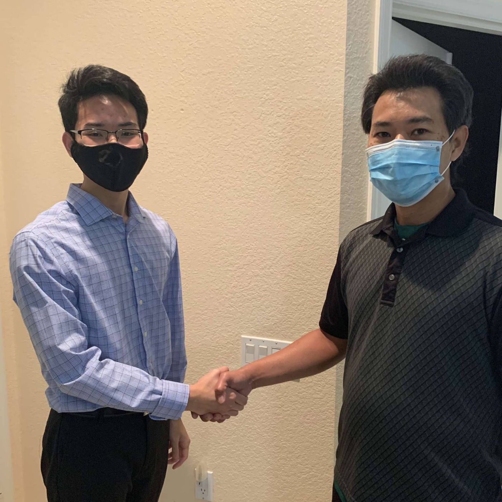

Michael Lazarius
Michael Lazarius ios the chief executive officer of MCA. Ever since his sister died from an incorrect prescription, he knew he had to fix the medical industry. So he started a little company called MCA and now nobody can say they haven't heard of MCA. I believe nobody should be scared of technology or medical advice and with MCA's service he gurantees you won't be. Because here at MCA we want to not only look better but feel better too.
Jack Wardlaw
Jack Wardlaw is MCA's chief operating officer. He has a fiery passion for the medical industry and telecommunications, always striving for excellence. He priotizes the needs of the customer, day and night, day in and day out. Only the best services at the best price will suffice for him. With years of experience in the medical field and in telecommunications, he knows how to make it happen. You know you can trust MCA with Jack running operations.
Carson Cox is MCA's director of strategic initiatives. He is an extensive planner of short and long term goals for the direction of the company. Always on the lookout for innovation, he is an avid studier of new marketing techniques and new services to offer. Carson holds an impressive and extensive resume of experience in the telecommunications industry. He is determined and focused to keep the company ahead of the competition and providing the best services possible. With Carson laying the blueprints of the company's future MCA is in safe hands.
Carson Cox

Napat Sammacheep

Napat is MCA's leading customer service representative. Napat has been working in the telecommunications industry for many decades now, giving him a considerable amount of experience in the industry. At MCA, he will be happy to interact with his customers and help them feel comfortable with the company's services. Any questions you have about the company or its services are directed toward Napat, and you can expect a response on short notice. Having Napat on the team puts customers and staff closer together, allowing customers to get where they need to be.
Calder is MCA's advertising and public relations manager. He is a versatile businessman and philanthropist who is always looking for the best affordable option when it comes to medical aid no matter what the circumstances are. If you are in search of superb medical advice or are seeking sublime virtual assistance you can be assured that his socialistic mindset will help you get you where you need to be. So what he is a part of the bourgeoisie? Calder believes in satisfying the needs of people of all socioeconomic classes, which is why you are in good hands when it comes to preeminent telecommunications service.
Calder Volino